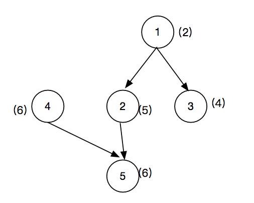

☰ 目录
001 系统中依赖最长的一条路径
链接和考点
| 阿里编程测试 |
|
| 考点 |
多叉树，路径数，遍历 |
| 难度 |
Medium |
题意
已知一些系统， 每个系统有各自的运行时间， 各个系统之间可能存在依赖关系。 求系统间的路径数，和最长的一条路径是多少。
示例：
5 4 // 输入5 个系统， 4 个依赖边
2 // 系统 1 的运行时间
5 // 系统 2 的运行时间
4 // 系统 3 的运行时间
6 // 系统 4 的运行时间
6 // 系统 5 的运行时间
1 2 // 1->2 有一条边
1 3 // 1->3 有一条边
2 5 // 2->5 有一条边
4 5 // 4->5 有一条边
输出：
13 3 // 最长的一条边是13， 路径数是3
有三条路径: 1->2->5 , 值是13； 第二条路径是 1->3, 值是6； 第三条路径是 4->5, 值是12；
分析
这是一个多叉数的问题：

建立好多叉树以后， 找到根节点（在添加依赖的时候，如果该节点被添加到另一个节点的分支上时，那么该节点肯定不是根节点）。
找到根节点后， 开始向下遍历。记录路径数和最长的路径。
注意回溯法的使用。
测试
很奇怪，这个只A了67%
参考答案
时间复杂度： O(n)
空间复杂度：O(n)
#include "GlobalHead.h"
#include <map>
using namespace std;
struct TreeNode{
int val;
int time;
vector<TreeNode *> next;
TreeNode(int val, int time ): val(val), time(time){}
};
void traverse(TreeNode *root, int& res, int& curLen, int& paths ){
if(root -> next.size() == 0){
paths++;
res = (res < curLen) ? curLen:res;
return;
}
for(int i=0; i < root -> next.size(); i++){
curLen += root->next[i] -> time;
traverse(root->next[i], res, curLen, paths );
curLen -= root->next[i] -> time;
}
}
int main() {
int systems, yilai;
cin >> systems;
cin >> yilai;
vector<TreeNode> time;
for(int i = 0; i< systems; i ++){
int ti;
cin >> ti;
TreeNode nn(i, ti);
time.push_back(nn);
}
for(int i=0; i< yilai; i++){
int one, two;
cin >> one;
cin >> two;
time[one-1].next.push_back(&time[two-1]);
}
vector<bool> vec(systems, false);
for(int i=0; i < systems; i++){
for(int j=0; j < time[i].next.size(); j++){
vec[time[i].next[j]->val] = true;
}
}
vector<int> only;
for( int i=0; i< vec.size(); i++ ){
if (vec[i] == false)
only.push_back(i);
}
int res = 0;
int paths = 0;
for (int i = 0; i < only.size(); i++){
TreeNode& head = time[only[i]];
int curLen = head.time;
traverse(&head, res, curLen, paths );
}
cout << res << "\t" << paths << endl;
return 0;
}
/* input
5 4
2
5
4
6
6
1 2
1 3
2 5
4 5
*/
/* output
5 4
2
5
4
6
6
1 2
1 3
2 5
4 5
13 3
*/
更新版通过率只有66% 我就郁闷了。。。